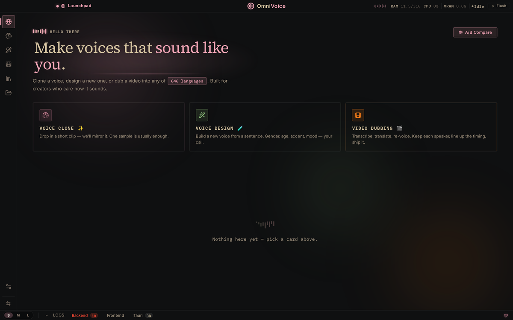
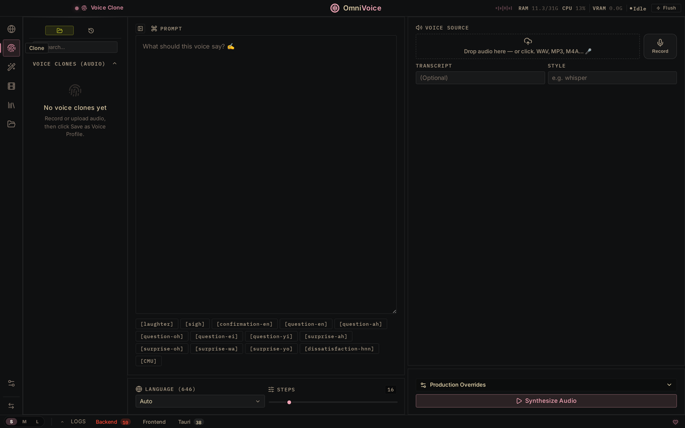
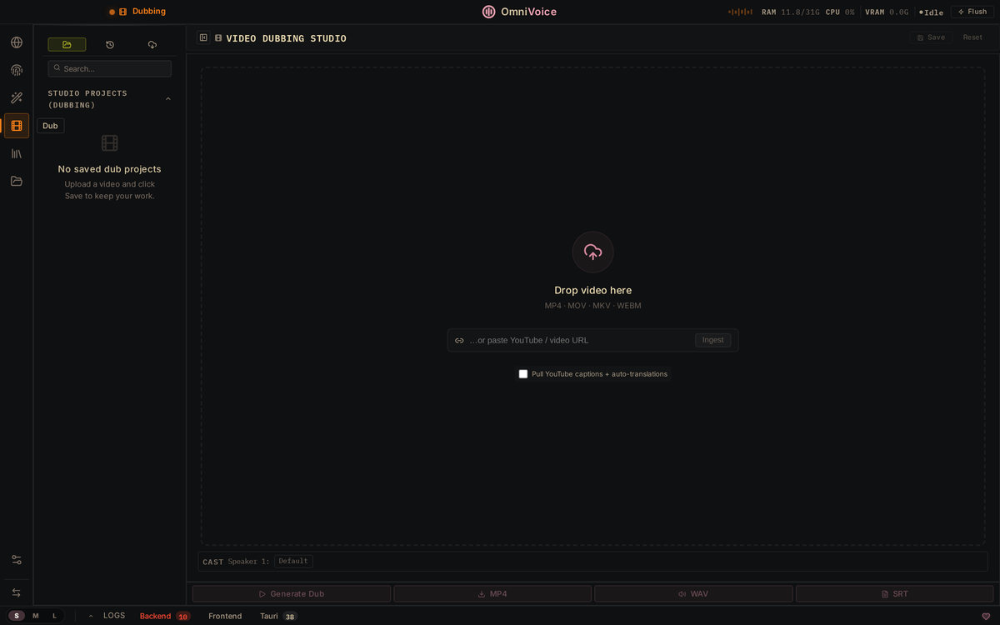

一句话判断：OmniVoice Studio 把ElevenLabs 付费云端能力完整搬到了本地——3秒克隆声音、646种语言、YouTube 自动转录配音、全局快捷键说话转文字、批量 50 视频后台跑。Mac/Win/Linux 全支持，不要 API、不联网、不花钱。
来源 @XAMTO_AI · 项目作者 debpalash · MIT 许可
来源：debpalash/OmniVoice-Studio/docs（MIT 许可）



每项功能都有独立界面模块，可单独使用也可组合。
零样本克隆任意声音，跨语言直接复制音色，无需联网、3 秒音频即可完成，646 种语言互通。
丢入 YouTube 链接 → 自动转录 → 翻译 → 重配音 → 导出 MP4，一条龙搞定多语言视频本地化。
全局快捷键激活，说话实时转文字，自动复制到任意 App 的剪贴板，任何场景都能无缝粘贴使用。
智能分离人声与背景音乐，自动剥离 BGM，支持多说话人区分标识，适合会议/访谈场景。
一次丢入 50 个视频，后台自动排队处理，进度实时可见，无需守在电脑前，适合批量本地化需求。
后端 Python + 前端 Electron，引擎可插拔，不绑定特定模型。
| 模块 | 功能 | 可替换引擎 |
|---|---|---|
| 🎤 ASR 引擎 | 语音转文字 · 实时字幕 | Whisper / Faster-Whisper / Paraformer |
| 🗣️ TTS 引擎 | 文字转语音 · 声音克隆 | XTTSv2 / CosyVoice / VALL-E / Bark |
| 🌐 翻译引擎 | 多语言互译 · 上下文理解 | NLLB / mBART / SeamlessM4T |
| 🎵 声轨引擎 | 人声/音乐分离 · 说话人识别 | Demucs / Spleeter / MDX |
不是 Demo，是可以实际用于工作流的桌面应用。
本地 + 开源 + 免费，听起来很美，但有它的适用边界。
最终判断：OmniVoice Studio 是目前最完整的开源本地语音克隆方案。3 秒克隆 + 646 语言 + YouTube 自动配音 + 批量处理，覆盖了 ElevenLabs 80% 的核心场景，而且完全离线、不花钱。
它的局限也很清楚：需要 GPU 才能流畅运行，音质与 ElevenLabs 顶级付费模型仍有差距。但对于隐私敏感场景和成本敏感团队，这是目前最优解。
来源：x.com/i/status/2062977002282594737 · github.com/debpalash/OmniVoice-Studio